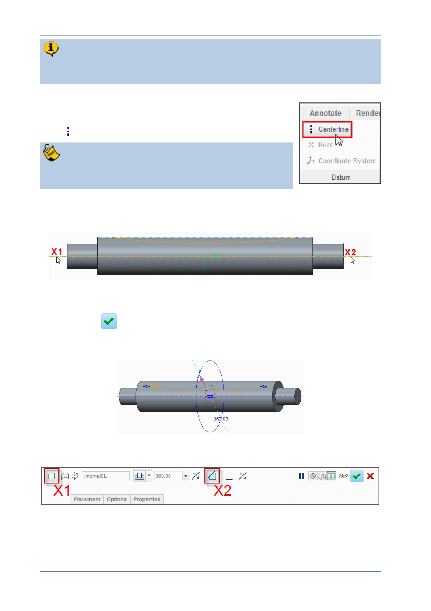

PTC Academic Program
As well as a sketched profile, a revolve requires an axis of revolution. You will
sketch a geometry Centerline to define the axis of revolution.
7. Adding a geometry center line:
In the Datum group of the Sketch tab, click the Centerline
tool.
Make sure you select the centerline tool from the Datum
group, not the Sketching group.
Click on the horizontal reference at X1 to start the centerline and at X2 to end it.
Be sure both are snapped to the horizontal reference.
Press CTRL + D to reorient the model to its default orientation.
Click OK
to complete the sketch and return to the Revolve dashboard.
The preview of the feature shows the dimension defining the revolve feature as 360
degrees around the axis of rotation.
8. Editing the Revolve feature to remove material from the strut:
Make sure the Revolve as solid ( X1 ) option is selected in the dashboard.
Click to enable the Remove Material X2 option from the dashboard.
Material will be removed from the side of the sketch shown by the purple material
© 2012 PTC
Creo Parametric 2.0 Primer
Page 58